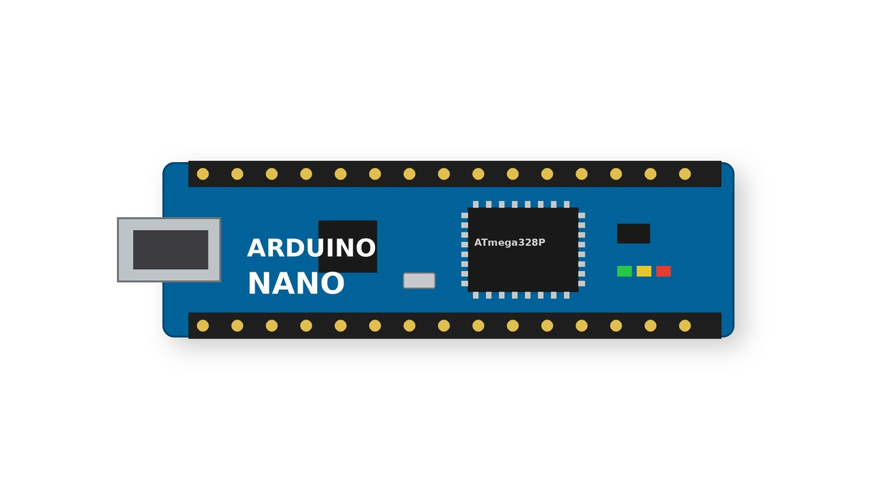
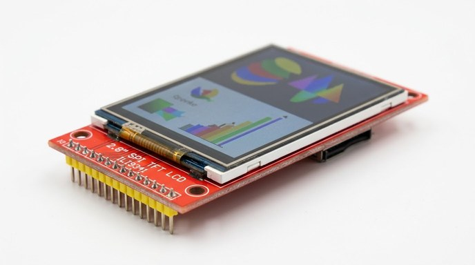
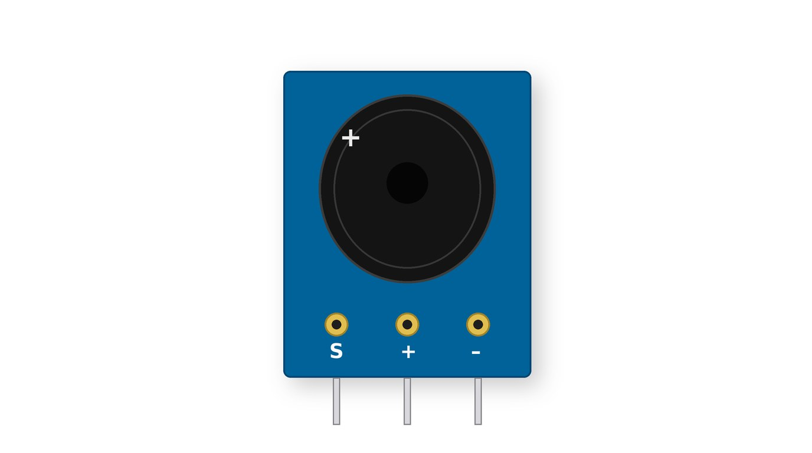
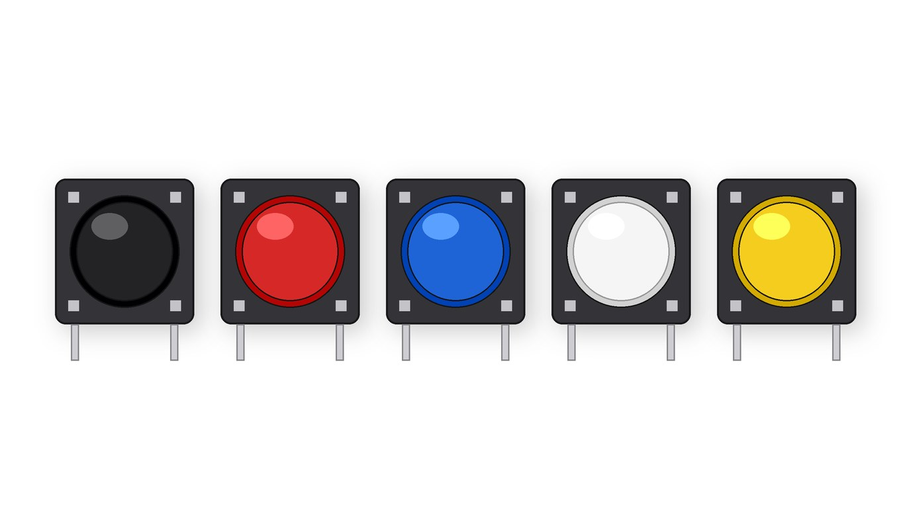
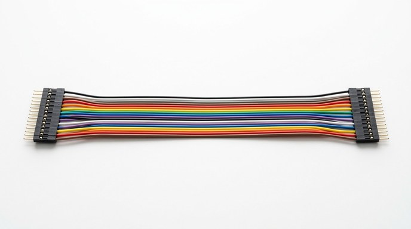
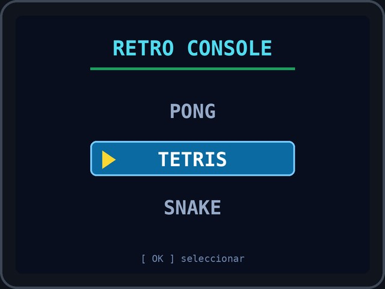
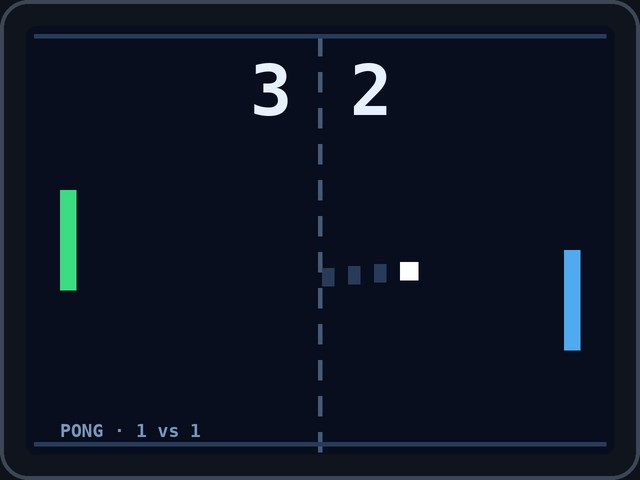
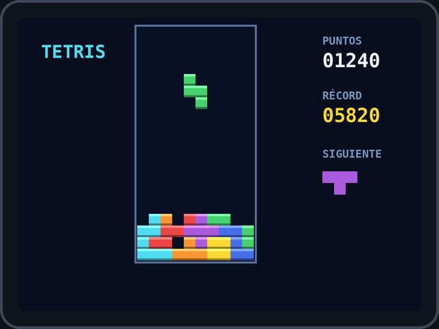
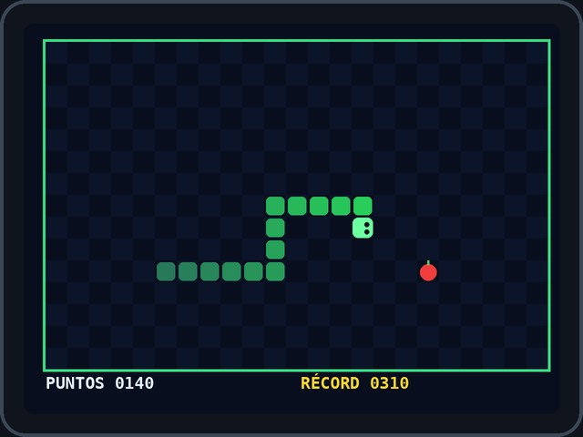
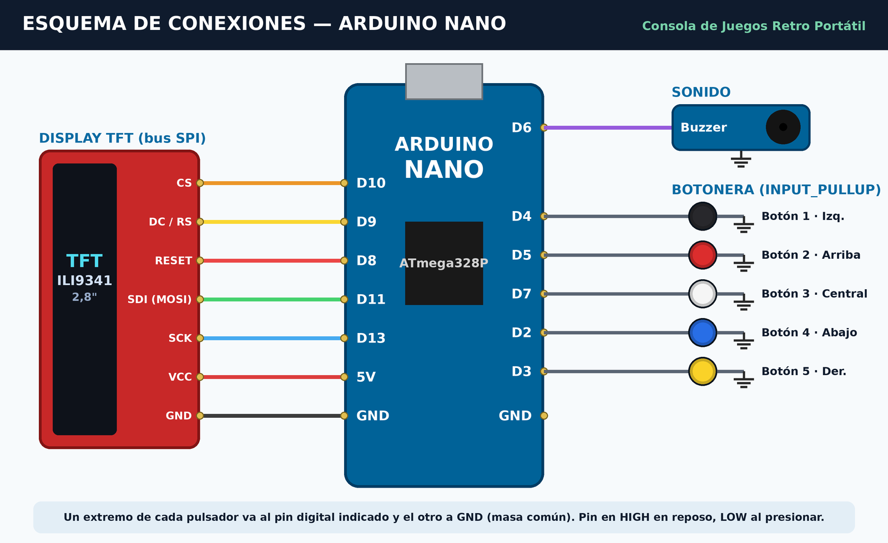

1Objetivos del Proyecto
Objetivo General
Diseñar, ensamblar y programar una consola de juegos retro portátil basada en un Arduino Nano (ATmega328P), que integre una pantalla gráfica TFT a color de 240 × 320 píxeles, una botonera física de cinco pulsadores y un emisor de sonido, y que ofrezca un menú principal interactivo con tres videojuegos clásicos (Pong, Tetris y Snake) desarrollados en lenguaje C++.
Objetivos Específicos
- Implementar comunicación SPI de alta velocidad: vincular el display ILI9341 con el Arduino Nano mediante el bus SPI para renderizar en tiempo real menús, animaciones y escenarios de juego con una tasa de refresco fluida.
- Aplicar control digital con resistencias pull-up internas: configurar los cinco pulsadores en modo
INPUT_PULLUP(lógica inversa), eliminando la necesidad de resistencias externas y simplificando el cableado. - Gestionar memoria no volátil EEPROM: almacenar y recuperar los puntajes máximos de los juegos en la EEPROM del ATmega328P, de modo que los récords se conserven aunque la consola se apague.
- Desarrollar la lógica de los juegos: programar colisiones, rebotes, puntuación, un sistema de pausa y una inteligencia artificial con distintos niveles de dificultad.
- Aplicar técnicas de prototipado sin soldadura: organizar las conexiones eléctricas (alimentación y masa común GND) y de señal utilizando cables Dupont de manera ordenada y segura.
2Materiales del Proyecto y Presupuesto
A continuación se detallan los componentes empleados en el armado de la consola, su función específica y su valor estimado en pesos argentinos (ARS):
| N° | Imagen | Componente y Función | Cant. | Precio Unit. | Subtotal |
|---|---|---|---|---|---|
| 1 |  | Arduino Nano (ATmega328P)Unidad central de procesamiento y control integral del sistema. | 1 | En stock / Adquirido previamente | — |
| 2 |  | Display LCD Duaitek 240×320 SPI con SD ILI9341 (compatible Arduino TFT-ILI9341)Pantalla gráfica a color para visualizar menús, animaciones y juegos mediante interfaz SPI de alta velocidad. | 1 | $ 18.590 | $ 18.590 |
| 3 |  | Módulo Buzzer Pasivo 3,3 V a 5 V (Zumbador Arduino)Emisor de efectos sonoros y alertas auditivas en los juegos y menús. | 1 | $ 3.200 | $ 3.200 |
| 4 |  | Kit de 25 pulsadores + capuchones de colores (negro, rojo, azul, blanco, amarillo)Se utilizan 5 pulsadores con capuchones diferenciados como botonera de control físico. | 1 kit | $ 6.000 | $ 6.000 |
| 5 |  | Cables DupontInterconexión eléctrica y de señales entre el Arduino Nano, el display y los periféricos. | Varios | En stock / Adquirido previamente | — |
| TOTAL GENERAL DEL PROYECTO (ARS) | $ 27.790 | ||||
Nota: los componentes marcados como “En stock / Adquirido previamente” no se suman al gasto actual. El total corresponde únicamente a los elementos adquiridos para este proyecto: $ 18.590 + $ 3.200 + $ 6.000 = $ 27.790.
3Funcionamiento del Software y Juegos
El software de la consola fue desarrollado en lenguaje C++ mediante el entorno Arduino IDE. Al encender el sistema se muestra un menú principal interactivo desde el cual el jugador navega con los botones de dirección y confirma su elección con el botón central. Desde allí se accede a los tres juegos programados.
Menú principal
Presenta las opciones de juego en pantalla a color. El jugador recorre las opciones con los botones Anterior / Siguiente y selecciona con el Botón 3. Cada juego, al finalizar o ser pausado, permite regresar a este menú.

Pong
- Modo 1 vs 1: dos jugadores comparten la botonera y controlan una paleta cada uno.
- Modo 1 jugador contra Inteligencia Artificial: la paleta rival es controlada por el programa, con tres niveles de dificultad: Fácil, Normal y Difícil.

Tetris
- Sistema de bolsa de piezas aleatorias (random bag): las piezas se mezclan en grupos, de modo que todas aparezcan con frecuencia equilibrada y se eviten largas rachas sin una pieza determinada.
- Persistencia de récords: el puntaje máximo se guarda en la memoria EEPROM y se conserva al apagar la consola.

Snake
- Velocidad única desafiante: el juego mantiene un ritmo constante, sin niveles de dificultad.
- Renderizado optimizado por bloques: solo se redibujan las celdas que cambian (cabeza, cola y comida) en lugar de la pantalla completa, reduciendo la carga sobre el bus SPI y evitando parpadeos.
- Memoria EEPROM: se guardan el puntaje máximo y el resultado de la última partida.

4Procedimiento de Armado y Esquema de Conexiones
El montaje se realizó sin soldadura, utilizando cables Dupont, en las siguientes etapas secuenciales dentro del Laboratorio de Hardware:
- Preparación y alimentación. Se dispuso el Arduino Nano y se definieron las líneas comunes de alimentación (VCC) y la masa común (GND) para todos los periféricos, de modo de contar con una referencia de tensión única.
- Conexión de la pantalla TFT ILI9341 (bus SPI). Se vincularon los pines de comunicación del display con los pines digitales del Arduino Nano según la tabla 4.1.
- Conexión del módulo buzzer. El pin de señal se conectó al pin digital D6 y el otro terminal a GND (tabla 4.2).
- Montaje de la botonera (5 pulsadores). Se montaron con configuración
INPUT_PULLUPy lógica inversa (tabla 4.3). - Verificación de continuidad y revisión del cableado. Antes de energizar el circuito se revisó cada conexión pin por pin para descartar cortocircuitos entre positivo y masa, o inversiones en las líneas de datos SPI.
- Pruebas funcionales y carga de código. Se conectó el Arduino Nano a la computadora por USB y se cargó el sketch desde el Arduino IDE. Se probó la respuesta de los cinco botones, los sonidos del buzzer, el menú principal, los tres juegos, el guardado de récords en EEPROM y el sistema de pausa.

4.1 Bus SPI — Display ILI9341
| Elemento | Pin del Arduino Nano | Observaciones |
|---|---|---|
| CS | D10 | Selección de chip |
| DC / RS | D9 | Datos / Comando |
| RESET | D8 | Reinicio del display |
| SDI (MOSI) | D11 | Datos hacia la pantalla |
| SCK | D13 | Reloj SPI |
| VCC | Alimentación | Según especificación del módulo |
| GND | GND | Masa común |
4.2 Módulo Buzzer
| Elemento | Pin del Arduino Nano | Observaciones |
|---|---|---|
| Señal (S) | D6 | Salida digital de sonido |
| GND (–) | GND | Masa común |
4.3 Botonera — 5 pulsadores con INPUT_PULLUP
Los pulsadores se montaron con lógica inversa: un extremo de cada pulsador se conecta al pin digital del Arduino Nano y el otro extremo directamente a GND (masa común). Al activar la resistencia pull-up interna del microcontrolador con INPUT_PULLUP, el pin permanece en HIGH en reposo y pasa a LOW al ser presionado, cerrando el circuito a masa. De esta forma no se necesitan resistencias externas.
| Botón | Pin | Conexión |
|---|---|---|
| Botón 1 | D4 | Un extremo al pin D4 — otro extremo a GND |
| Botón 2 | D5 | Un extremo al pin D5 — otro extremo a GND |
| Botón 3 | D7 | Un extremo al pin D7 — otro extremo a GND |
| Botón 4 | D2 | Un extremo al pin D2 — otro extremo a GND |
| Botón 5 | D3 | Un extremo al pin D3 — otro extremo a GND |
5Configuración de Controles por Modo de Uso
La función de cada botón cambia según el contexto en que se encuentra el sistema. Se detallan a continuación los controles de cada modo.
5.1 Menús (Principal y Submenú Pong)
| Botón | Función |
|---|---|
| Botón 1 | Anterior / Arriba |
| Botón 5 | Siguiente / Abajo |
| Botón 3 | Seleccionar / Confirmar. Mantener 0,5 s en submenús vuelve al menú principal. |
5.2 Sistema de Pausa y Game Over (global)
| Botón | Función |
|---|---|
| Botón 3 — en partida (toque corto) | Pausa o despausa el juego. |
| Botón 3 — en partida (mantener 0,5 s) | Congela la partida y vuelve automáticamente al menú principal. |
| Botón 3 — en Game Over (toque corto) | Reinicia el mismo juego al instante. |
| Botón 3 — en Game Over (mantener 0,5 s) | Regresa al menú principal. |
5.3 Modo Pong
Contra IA
| Botón | Función |
|---|---|
| Botón 1 | Bajar paleta P1 |
| Botón 2 | Subir paleta P1 |
1 vs 1
| Botón | Función |
|---|---|
| Botón 1 | Bajar paleta P1 |
| Botón 2 | Subir paleta P1 |
| Botón 4 | Subir paleta P2 |
| Botón 5 | Bajar paleta P2 |
5.4 Modo Tetris
| Botón | Función |
|---|---|
| Botón 1 | Mover izquierda |
| Botón 5 | Mover derecha |
| Botón 2 | Rotar pieza |
| Botón 4 | Caída rápida |
5.5 Modo Snake
| Botón | Función |
|---|---|
| Botón 2 | Arriba |
| Botón 4 | Abajo |
| Botón 1 | Izquierda |
| Botón 5 | Derecha |
Resumen general de botones
| Botón | Pin | Menús | Pong | Tetris | Snake |
|---|---|---|---|---|---|
| Botón 1 | D4 | Anterior / Arriba | Bajar P1 | Mover izq. | Izquierda |
| Botón 2 | D5 | — | Subir P1 | Rotar pieza | Arriba |
| Botón 3 | D7 | Seleccionar | Pausa / Menú | Pausa / Menú | Pausa / Menú |
| Botón 4 | D2 | — | Subir P2 (1 vs 1) | Caída rápida | Abajo |
| Botón 5 | D3 | Siguiente / Abajo | Bajar P2 (1 vs 1) | Mover der. | Derecha |